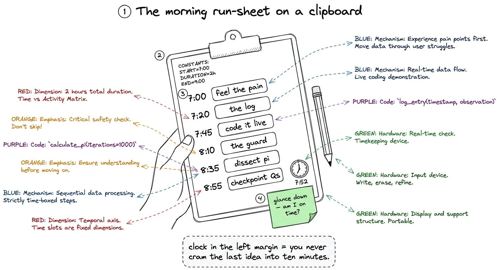
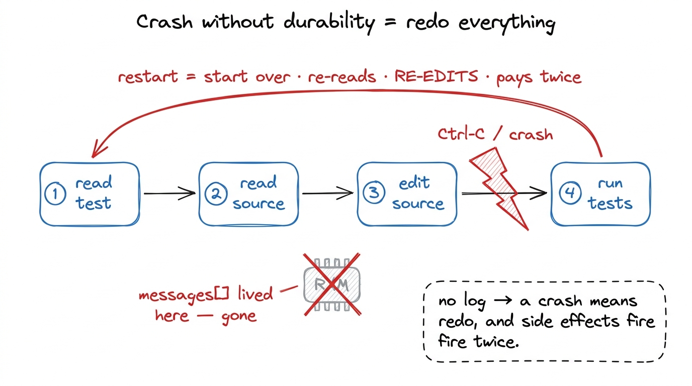
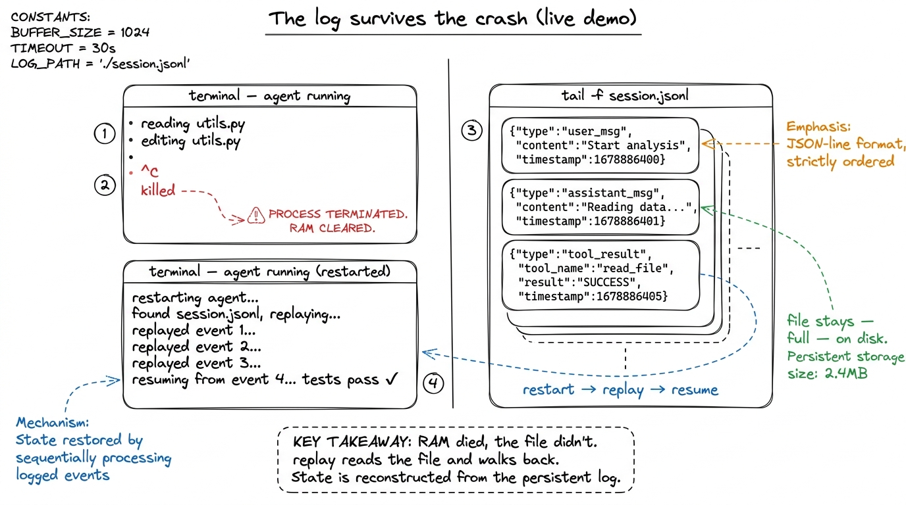
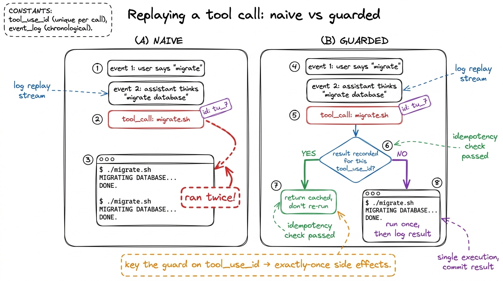
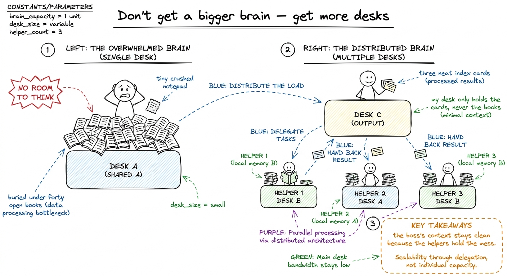
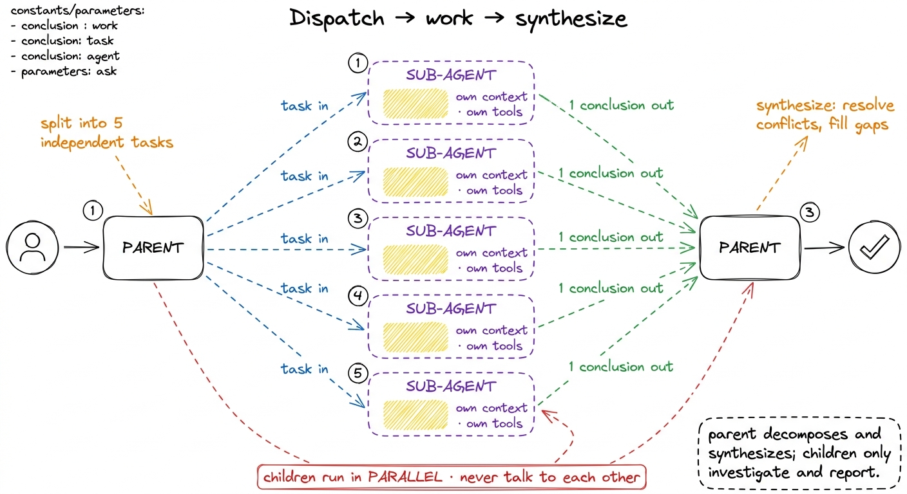
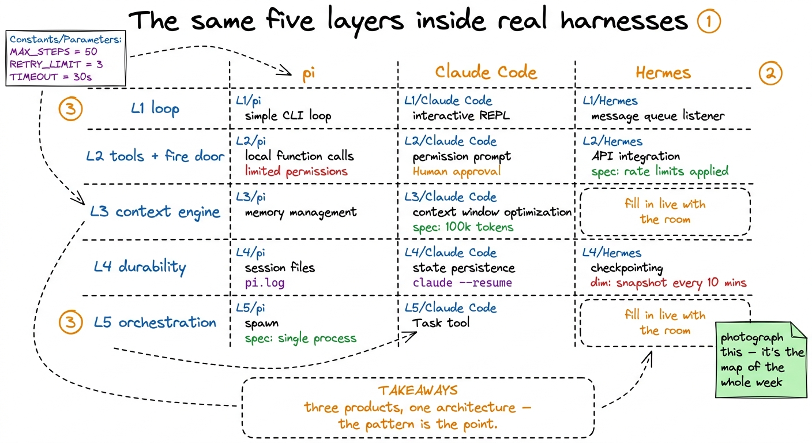

Lecture plans: Days 4-5, block by block
By the end of this chapter you can walk into the room on Thursday and Friday with a printed run-sheet in your hand and teach the last two days of the workshop minute by minute — durability and orchestration, then the great production dissections (pi, Hermes, Claude Code) and the capstone kickoff — knowing exactly what goes on the board at 7:15, which line of code you type live at 7:40, and which question you ask at 8:50 to check the room is still with you.
This is a delivery-craft chapter. It assumes you already understand Layer 4 and Layer 5 from the earlier mentor chapters. What you need now is the choreography: the timings, the one live build per block, and the checkpoint questions. Think of the earlier chapters as the score and this one as the conductor's cue sheet.
Both mornings run 7:00–9:00 AM IST, and both follow the week's rhythm: feel the pain first, then build the fix. Never open with "today we learn durability." Open with "watch this break," break it live, and let the fix be the relief.

figure rendering · The mentor's run-sheet: clock times down the left margin so a glance tThursday (Day 4): Durability — the save point
The day has one job: make the students never again trust an agent that lives only in RAM. They should leave able to kill a process mid-task, restart it, and watch it walk back to exactly where it was. The emotional anchor is the video-game save point; the technical anchor is the append-only event log.
Block A — 7:00 to 7:20 — Feel the pain (20 min)
Do not define durability. Break it. Open the harness you built through Wednesday, start a real task — "add a docstring to every function in utils.py and run the tests" — let it read three files and make an edit, then hit Ctrl-C live. Restart the same command. Watch it start over from zero: re-read the same files, re-make the same edit.
- Board (7:00): a horizontal track of four boxes — read, read, edit, test. A red lightning bolt after box 3. A big curved red arrow looping all the way back to box 1, labeled "starts over — pays again, edits AGAIN."
- Say (7:10): the line below.
- Checkpoint (7:18): "Where did the agent's memory live? Why did the crash erase it?" You want "in the
messagesvariable, in RAM." That answer is the setup for the day.
messages list — sitting in the memory of a running program. When I hit Ctrl-C, that program died, and the variable died with it. The agent doesn't wake up confused; it wakes up reborn, with no idea it ever lived. Everything we build this morning is one idea: get that memory out of RAM and onto disk, so a crash is a nap, not a death."
figure rendering · Block A's board: with no log, a crash forces the agent to start over —Block B — 7:20 to 7:45 — The one idea: the log is the session (25 min)
Now the fix, as a concept before any code. Stop treating messages as the source of truth; treat it as a projection of something durable. Every meaningful thing — user message, model reply, tool call, tool result — is written as an event to an append-only log on disk before we act on it. The messages array is just what you get by folding those events back into shape.
- Board (7:20): a vertical stack of event cards labeled "EVENT LOG (append-only, on disk)"; a dashed arrow right labeled "fold / replay" to a faded "messages[] (in RAM)." Green by the log: "durable · survives crash." Red by the array: "disposable · rebuilt anytime."
- The phrase to drill: "The log is the session. The array is just a view of it." Say it three times.
- Checkpoint (7:42): "If the array is disposable, how do we get it back after a crash?" Fishing for: "read the log and replay the events in order."
--resume, and --continue all fall out of that one property for free." Students expect a special recovery mode; there isn't one, and that's the beauty.Block C — 7:45 to 8:15 — Build it live: append-only log + rebuild (30 min)
Now type. Keep it small — durability is ~60 lines, not a framework. Live-code two functions and show them working:
import json, os, time, pathlib
def append_event(log_path, event):
event["ts"] = time.time()
with open(log_path, "a") as f:
f.write(json.dumps(event) + "\n") # one JSON object per line
f.flush()
os.fsync(f.fileno()) # actually hit the disk before we return
def rebuild_messages(events):
messages = []
for e in events:
if e["type"] == "user_msg":
messages.append({"role": "user", "content": e["content"]})
elif e["type"] == "assistant_msg":
messages.append({"role": "assistant", "content": e["content"]})
# tool_result folds back the same way
return messages- Demo (8:00): run the task,
catthe JSONL log so everyone sees the events as real lines of text on disk, then Ctrl-C mid-run — restart and watch it replay and continue. The room should audibly react. - The one word to over-explain:
fsync. "flush hands the data to the operating system; fsync forces the OS to actually push it onto the physical disk. Without fsync you have 'probably saved.' With it, 'saved.'" - Checkpoint (8:12): "Why do we append the event before we act, not after?" (Setup for Block D.)
tail -f runs/session.jsonl. Events stream into the file in real time on the right. Then Ctrl-C the left pane — the file stops growing but stays there, full. Restart, and the events replay and the file resumes. Watching the log survive the crash on screen is worth a thousand words.
figure rendering · The Block C demo: agent on the left, live log tail on the right — theBlock D — 8:15 to 8:45 — The dangerous part: replaying side effects (30 min)
This block separates a toy from a real harness, so protect the time. Clean cases — a model call, a read_file — are safe to replay because re-running them changes nothing. The danger is steps with side effects: git push, write_file, a POST that charges a card. If the crash lands after the side effect but before we logged its result, naive replay runs the side effect again.
- Board (8:15): one side-effecting step,
./migrate.sh, as a card with no result card after it. The naive replay arrow loops it back into a terminal that runs./migrate.shtwice. Big red warning: "ran twice — duplicate side effect." - Then the fix (8:25): every tool call carries a unique
tool_use_id. Before executing a tool on replay, ask: have I already recorded a result for this id? If yes, return the cached result and don't touch the world again. If no, run it once, then log the result.
def run_tool_guarded(log_path, events, tool_use_id, name, args):
for e in events: # replay path
if e["type"] == "tool_result" and e["tool_use_id"] == tool_use_id:
return e["result"] # cached — do NOT re-run
result = run_tool(name, args) # first time: run once
append_event(log_path, {"type": "tool_result",
"tool_use_id": tool_use_id, "result": result})
return result- The honest caveat to say out loud: the harness makes duplicates rare; truly-irreversible operations still want an idempotency key on the operation itself so a real double-fire collapses to one effect. Teaching the honest edge builds trust.
- Checkpoint (8:40): "Reading a file twice — safe? Sending an email twice?" Make them sort three or four tools into "safe to replay" vs "not." That sorting is the concept.
tool_use_id guard plus idempotent operations give you the second. You need both, and students conflate them constantly.
figure rendering · Block D's core board: naive replay double-fires side effects; guardingBlock E — 8:45 to 9:00 — Wrap and the bridge to tomorrow (15 min)
Zoom back out. In ~60 lines the students got four things that usually cost four separate systems: crash recovery, --resume/--continue, exactly-once tool execution, and reconnectable live streaming. All four are consequences of one move: the log is the session.
- Checkpoint (8:52): three fast recall questions — "What lives in the log? What's the guard keyed on? What's the difference between correct and safe replay?"
- Bridge (8:57): "Durability gets you back to the point of failure. It does not fix the failure — a flaky API or a too-big job. Tomorrow we handle the too-big job: we teach one agent to hire a team."
1 If you're running ahead here, the best filler is to show claude --resume or a pi session file live — a real production harness doing exactly the thing they just built. Nothing cements a lesson like seeing it in the shipping tool five minutes after building the toy version.
Friday (Day 5): Orchestration, production dissections, and the capstone
Friday's pacing differs from a normal day: less new code, more reading real code and starting the capstone. The one new idea is sub-agents; the rest is the victory lap where the week's map gets laid over the real harnesses and the students point their build at the finish line.
Block A — 7:00 to 7:25 — Feel the pain, then the one idea (25 min)
Break it first. Give the harness a genuinely big job — "audit every file in this directory for hardcoded secrets." Watch the context window fill with raw source until the model, drowning, loses the plot or hits the limit.
- Board (7:00): one overflowing beaker labeled "boss context," crammed with hatched bands "file1 … file40 (raw source)," red note "no room left to think."
- The one idea (7:12): don't get a bigger brain — get more desks. A sub-agent is the exact same agent loop you already built, called again with a fresh, empty message list. Hand it one narrow instruction; it does its own laps in its own private context and returns one string. The forty files pile up in the helper's context and evaporate when the helper does. Only the answer crosses back.
- Checkpoint (7:22): "Does the sub-agent remember the boss's conversation?" The answer — "no, it starts blind" — is the whole point, so drill it.

figure rendering · Friday's core metaphor: one desk buries the worker; handing each pileBlock B — 7:25 to 7:55 — Build the spawn primitive, live (30 min)
Type the smallest sub-agent that shows the idea. Expose it to the boss model as just another tool called spawn_agent.
def spawn_agent(instruction: str) -> str:
sub_messages = [{"role": "user", "content": instruction}] # brand-new, EMPTY
return run_agent_loop(sub_messages, SUBAGENT_TOOLS) # the SAME loop- Demo (7:40): run the secret-audit again with
spawn_agent. Show the boss's message list staying tiny — a handful of one-line findings — while the helper's list is fat with raw file contents that never touch the boss. - Two lines to pause on:
SUBAGENT_TOOLSis often narrower (a read-only investigator shouldn't getwrite_file— a blast-radius decision), and the sub-agent's system prompt casts it in a role: "you are a focused investigator, work fast, end with a crisp conclusion." - Name the parent's real job (7:48): dispatch (split into independent sub-tasks) and synthesize (read the conclusions, resolve conflicts, produce one answer). Skipping synthesis wastes the pattern.
- Checkpoint (7:52): "The boss got five findings back — does it paste them together, or something more?" (Synthesize.)

figure rendering · Block B's board: the parent fans narrow tasks out to isolated childrenBlock C — 7:55 to 8:30 — The production dissection: pi, Hermes, Claude Code (35 min)
The victory lap, and the most motivating half-hour of the week. The students have now built all five layers. Open real harnesses and let them find the layers they built inside the tools they use daily. Nothing sells the workshop harder than "you already understand this." Run it as a guided reading, layer by layer — for each of the three, fill in the same five-row table together.
- pi — the harness this workshop rebuilds. Point at its spawn primitive (Layer 5), session files (Layer 4 — "that's
--resume, that's our log"), tool schemas (Layer 2), compaction (Layer 3). "pi is not magic; it is the five things on this board, done carefully." - Claude Code — the
Tasktool isspawn_agent(L5).claude --resumeis the replay-from-log they built this morning (L4). The permission prompt before a destructive command is the fire door (L2).CLAUDE.mdis the memory file (L3). Anthropic's multi-agent research system — a lead agent spawning parallel sub-agents, each with its own context window — is L5 at production scale. - Hermes — a leaner take; use it to show the same five layers arranged differently, so students see the architecture is a pattern, not one company's product.
- Board: a 3-column × 5-row grid. Columns: pi, Claude Code, Hermes. Rows: the five layers. Fill each cell live with "where does this harness put this layer?" The filled grid is the best artifact of the week — photograph it.
- Checkpoint (8:25): hand the room a mystery feature ("Cursor keeps working when you close the laptop") and ask "which layer is that?" (Durability.) Two or three rapid-fire.

figure rendering · Block C's centerpiece: a fill-in-live grid mapping the five layers theBlock D — 8:30 to 9:00 — Capstone kickoff (30 min)
End the week pointing the whole build at a finish line. The capstone: take your harness and make it do one real, end-to-end task on a real repo — the students' choice, scoped to exercise multiple layers (reads, edits, runs tests, survives a Ctrl-C, and ideally dispatches one sub-agent).
- 8:30 — Frame it (5 min): "For five days we built the room around the model, layer by layer. Today you turn it on and let it do a real job. This is the moment the toy becomes a tool."
- 8:35 — Scope it (10 min): give three or four pre-vetted starter tasks (add tests to a small module, migrate a deprecated call, fix a known failing test) so nobody burns twenty minutes choosing. Definition of done on the board: the agent completes the task, you kill it once mid-run and it resumes, and it spawns at least one sub-agent.
- 8:45 — Set them loose (12 min): students start; you and the co-mentor circulate, log-tail split-screen ready to debug with.
- 8:57 — Close (3 min): the final word of the week — below.
input_schema errors at 8:50.You can now teach
- Thursday, block by block — break the RAM-only agent live, build the append-only event log and rebuild-by-replay (~60 lines), then the
tool_use_idguard for exactly-once side effects, with clock times and a checkpoint per block. - The live demos that land: the split-screen
tail -fof the JSONL log surviving a Ctrl-C, and the naive-vs-guarded double-migrate.sh. - Friday's one new idea — sub-agents as "the same loop, called again with an empty message list," dispatch-and-synthesize, and the sub-agent-vs-handoff distinction in one clean line.
- The production dissection as a fill-in-live 3×5 grid — mapping the five layers the students built onto pi, Claude Code, and Hermes — the most motivating half-hour of the week.
- The capstone kickoff: how to scope pre-vetted tasks, a definition-of-done that exercises Layers 4 and 5, and the closing line that sends them out as people who have built a harness from scratch.
- The two honest caveats every mentor must keep straight: "correct replay ≠ safe replay" (log vs. idempotency) and "durability recovers the crash, not the cause."